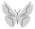
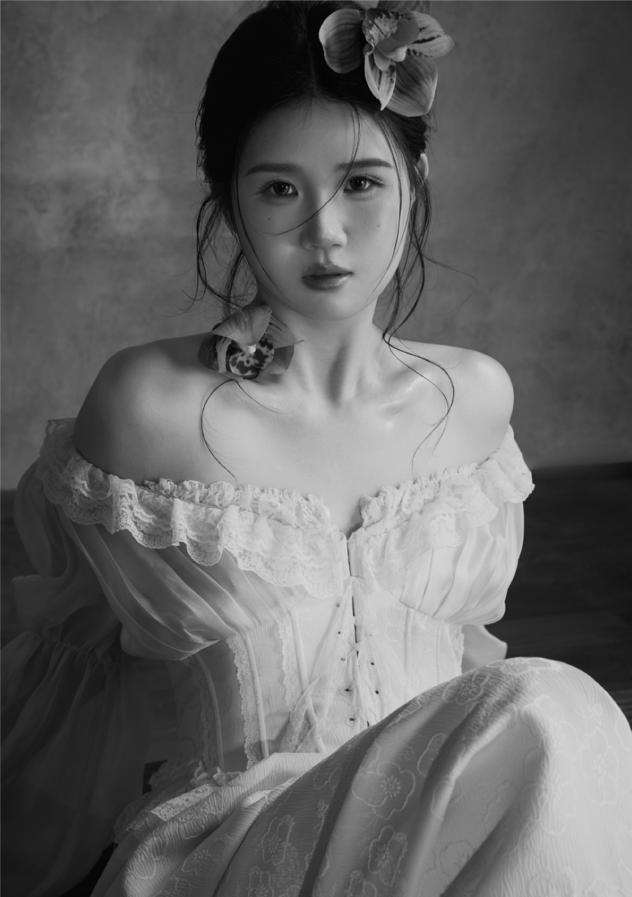

产品体验设计
C 端 / B 端 · 从 0 到 1 · 体验升级
需求调研、信息架构与交互原型，将复杂业务转化为清晰、易用的界面与任务路径。

jingjing.guo
UI/UX 设计师
拥有丰富的 C 端与 B 端设计经验，覆盖 AI 健康、生鲜电商、教育、农业、硬件制造、供应链等领域。具备多个复杂产品从 0 到 1、体验升级与设计变体组件系统搭建经验。以良好的 UI/UX 视觉审美连接业务与用户，关注流行趋势，热爱新事物，保持快速学习。
C 端 / B 端 · 从 0 到 1 · 体验升级
需求调研、信息架构与交互原型，将复杂业务转化为清晰、易用的界面与任务路径。
视觉语言 · 设计规范 · 变体组件
搭建并维护组件资产，协同设计评审与研发验收，兼顾产品体验、品牌表达与交付一致性。
ChatGPT · Figma Make · Stitch
熟练运用 AI 工具进行视觉生成、交互原型、体验与还原走查，持续探索更高效的设计工作流。
2025.05 — 2026.05
UI & UE 设计
2021.04 — 2024.01
UI & UE 设计
2020.08 — 2021.04
UI & UE 设计
2018.12 — 2020.07
UI 组长
2018.10 — 2021.06
视觉传达设计专升本
2013.09 — 2016.06
移动技术统招专科